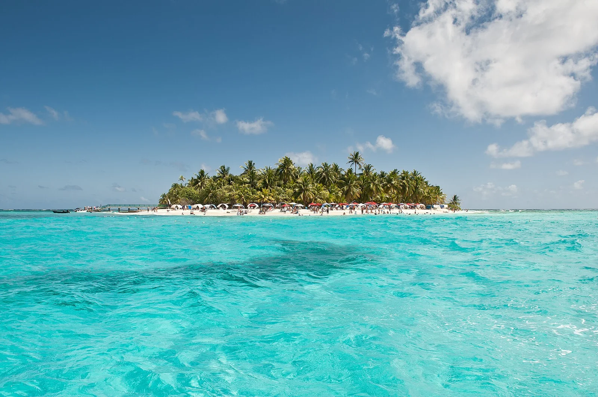

San Andrés
Archipel de San Andrés, Colombie · plongée, snorkeling

Une île colombienne de la mer des Caraïbes, au sein de l’archipel de San Andrés. Les excursions de snorkeling et de plongée rejoignent différents secteurs récifaux autour de l’île.
- Lieu
- Archipel de San Andrés, Colombie
- Niveau
- Variable selon les conditions
- Activités
- plongée, snorkeling
- Type d'eau
- Mer / océan
- Coordonnées
- 12.58, -81.69 (position approximative du secteur)
Ouvrir dans Ocean Buddy Télécharger sur l'App Store
Source : Wikipédia · géographie du lieu.